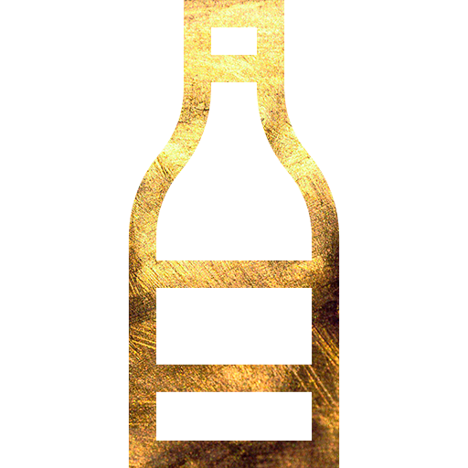

<ion-menu [content]="content">
    <ion-content class="menu-content" padding>
        <h4>Menú</h4>
        <div>
            <div class="margen3_app">
                
            </div>
            <div class="margen2_app">
                <h6>{{user.nombre}}</h6>
            </div>
            <div class="margen1_app">
                
            </div>
        </div>
        <div class="borde"></div>
        <div class="margen4_app">
            <ion-list class="menu-list">
                <button ion-item (click)="irHome( home )">
                      Home
                  </button>
                <!-- <button ion-item (click)="irNosotros( nosotros )">
                    Nosotros
                  </button> -->
                <button ion-item (click)="irReservacion( reservacion )">
                     Reservaciones
                  </button>
                <button ion-item (click)="irCarta( carta )">
                      Carta Móvil
                  </button>
                <button ion-item (click)="irPerfil( perfil )">
                     Perfil
                  </button>
                <button ion-item (click)="irHistorial( historial )">
                      Historial
                  </button>
                <ion-footer>
                    <button style="text-align: right" ion-item (click)="salir( rootPage )">
                               Cerrar Sesión
                        </button>
                </ion-footer>

            </ion-list>
        </div>
    </ion-content>
</ion-menu>


<ion-nav [root]="rootPage" #content></ion-nav>